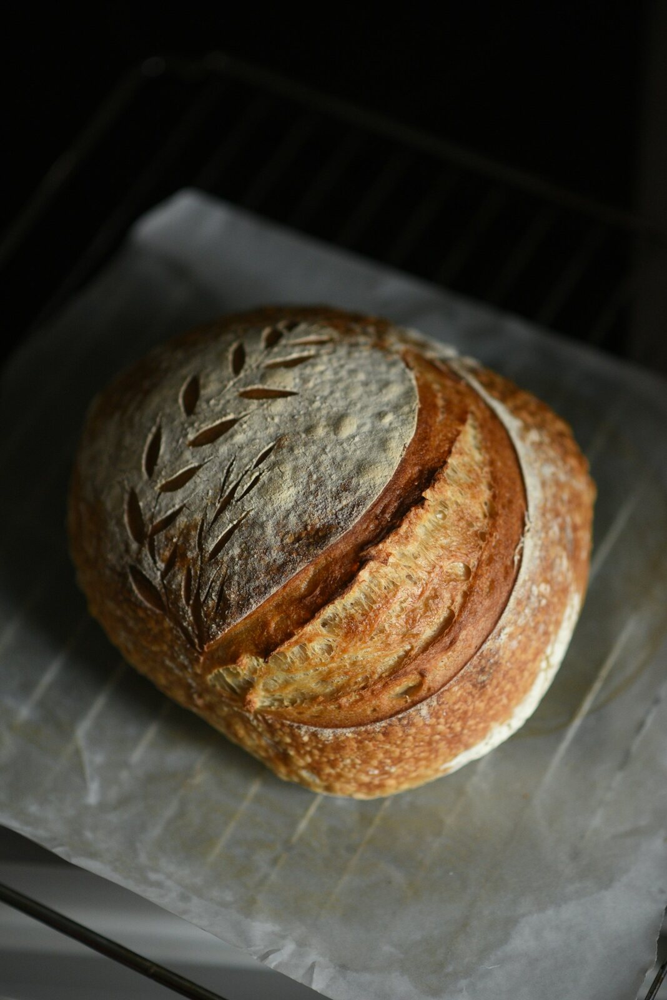
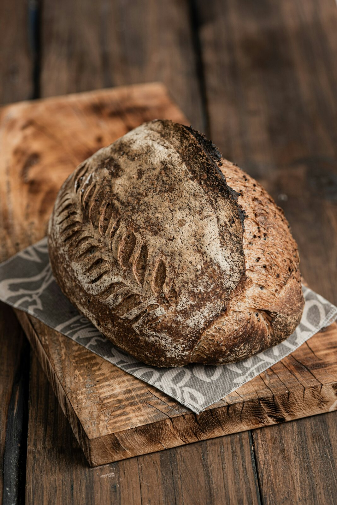
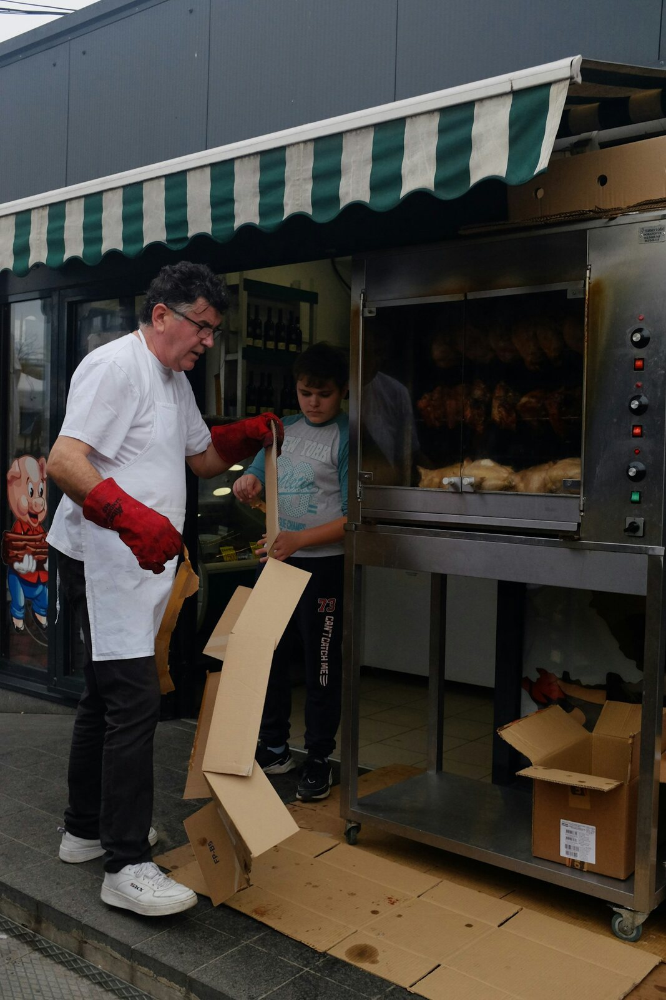
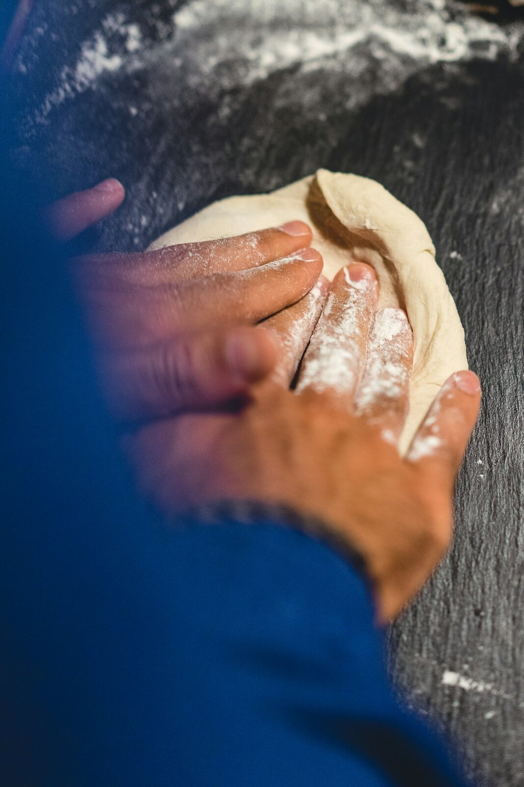
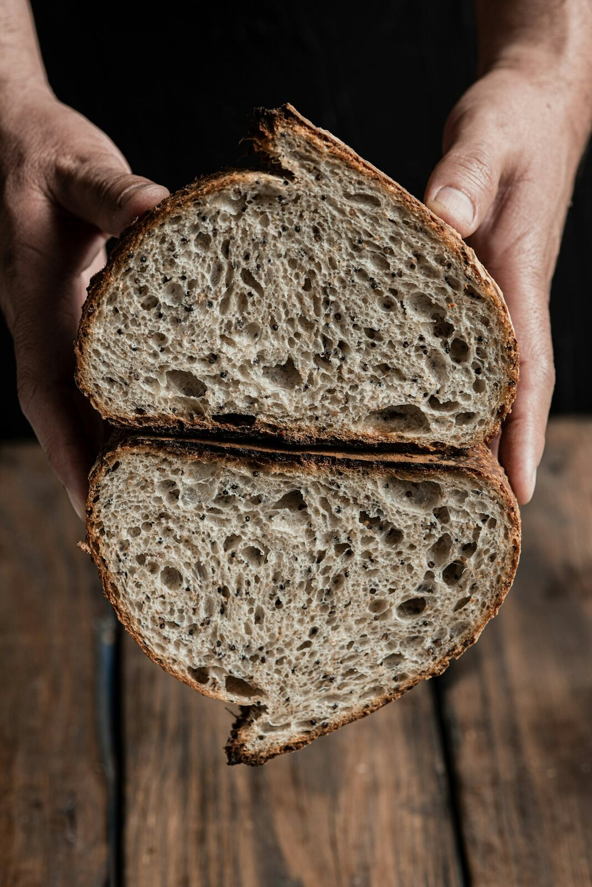
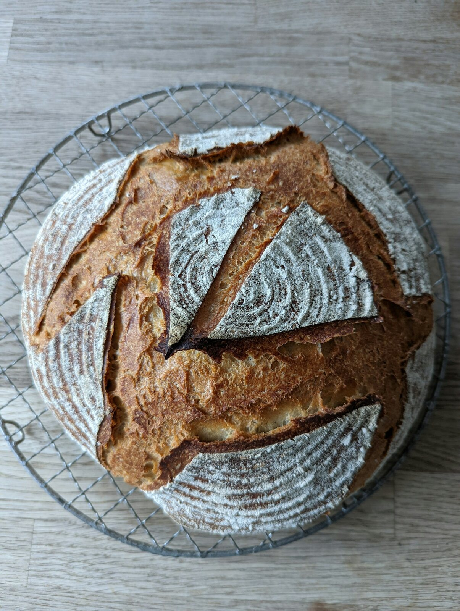

高含水吐司：柔软不等于湿黏
从面筋状态、面温和烘烤时间入手，整理一份可以重复制作的基础吐司配方。

NEW NOTES

从面筋状态、面温和烘烤时间入手，整理一份可以重复制作的基础吐司配方。

室温、冷藏与酵母用量如何配合，做出轻盈而有支撑力的饼底。

一次夏季制作记录：从液体温度、揉面节奏到发酵判断的实际调整。
EXPLORE
从配方开始，也可以先解决一个具体的烘焙问题。
BAKED & DOCUMENTED
记录成品的烤色、组织、切面与造型。


“好的配方给出比例，也应该告诉你如何判断状态。”JIAYUN'S NOTE 03
ABOUT THIS SITE
我偏爱细腻的发酵、清晰的风味，以及能在家中稳定复现的配方。这里不售卖面包，也没有课程；只分享我实际做过、认真整理过的内容。
了解更多